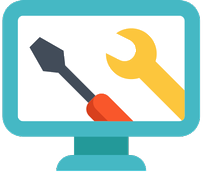

Nosotros

Como surge techincal Wolf ?
Nuestra historia comenzó en 2020.
En epocas de pandemia, cuando las clases se volvieron virtuales, el trabajo se volvio rutinario hacerlo desde casa atras de una computadora y la conducta de jugar videojuegos aumento demasiado, se notó que por el exceso de uso, las maquinas tendian a requerir un mantenimiento mas constante, asi como tambien la creacion de nuevos equipos para aquellos que no tenian.
Es por esto que se decidio empezar por una alternativa, la reparacion, mantenimiento y armado de PC.
Que esperas para actualizar tus equipos, no dudes en contactarnos!
contamos con la formación y experiencia que nos permite saber lo que necesita tu computadora. sin importar los avances de la tecnología y las variaciones en las necesidades de las personas, recibimos una formación constante la cual nos permite actualizar nuestros conocimientos. Por estas razones al recibir tu equipo desarrollamos un diagnóstico poniendo en primer lugar tus intereses y los de tu computadora
